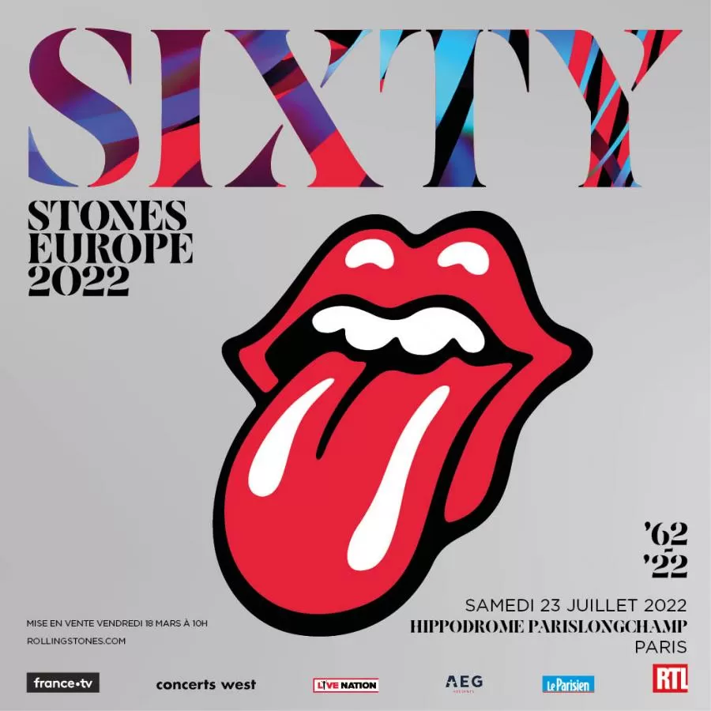
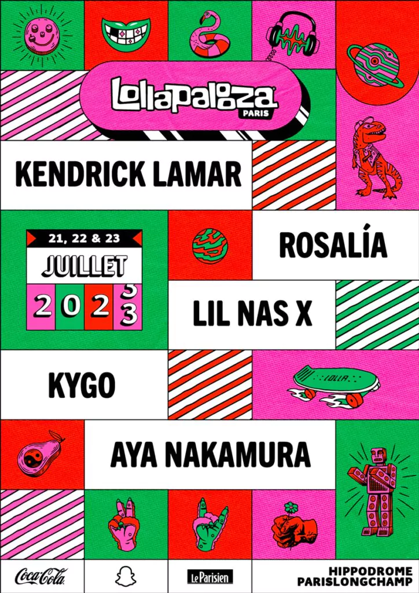
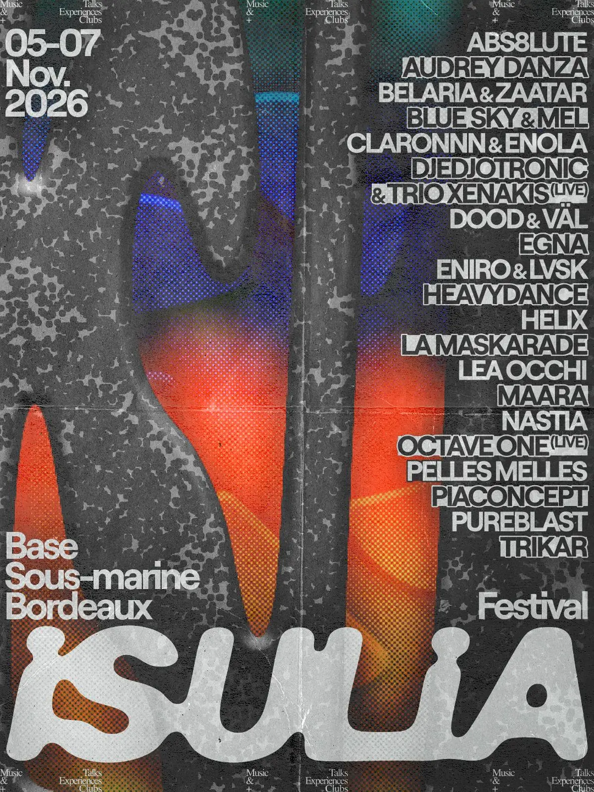

À compléter
Petit texte de présentation : bénévole ou salarié, missions réalisées et ce que cela m'a apporté.
- Juillet 2022 Rolling Stone Paris
- Juillet 2023 Lollapalooza Paris
- Novembre 2026 Isulia Festival - Bordeaux


